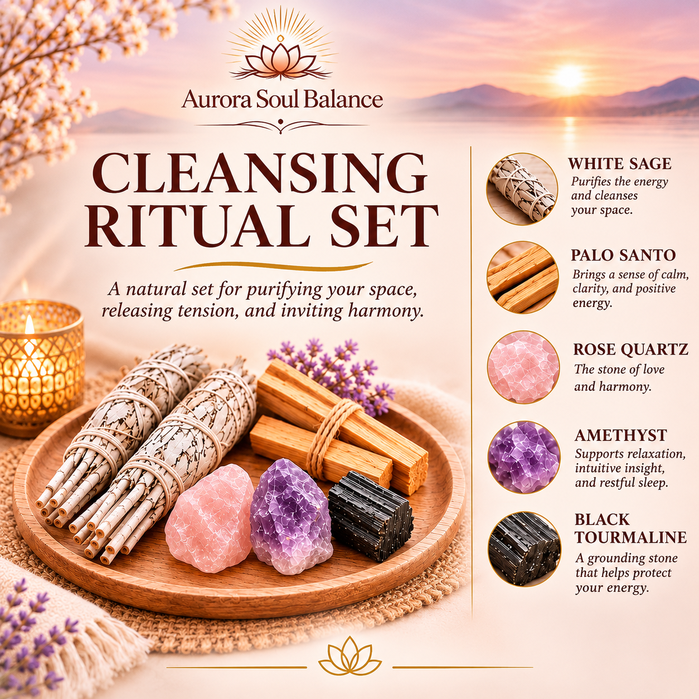

Cleansing Ritual Set

Create a Space Filled with Peace and Harmony
Bring a sense of calm, warmth, and harmony into your home with the Aurora Soul Balance Cleansing Ritual Set.
Thoughtfully curated with White Sage, Palo Santo, and three natural crystals, this beautiful set brings together elements traditionally associated with cleansing rituals, meditation, relaxation, and mindful living.
Whether you're creating a peaceful corner for meditation, setting an intention for a fresh start, or simply making time to slow down and reconnect with yourself, this collection invites you to create a space that feels calm, balanced, and welcoming.
Beautifully presented, it also makes a thoughtful and meaningful gift for someone special.
What's Inside Your Cleansing Ritual Set
White Sage - 2 Bundles
White Sage is cherished for its distinctive earthy, herbal aroma and its long-standing place in traditional cleansing rituals.
When gently burned, it releases a fragrant smoke traditionally used as a symbolic way to clear a space, refresh the atmosphere, and invite a sense of harmony.
Its natural aroma makes it a beautiful addition to meditation, mindfulness, relaxation, and personal rituals.
Palo Santo - 2 Sticks
Known as "Holy Wood," Palo Santo originates from South America and has been valued for generations for its distinctive, comforting fragrance.
Its warm, woody aroma features subtle hints of citrus and resin, creating an inviting atmosphere that complements moments of relaxation, meditation, yoga, and quiet reflection.
Palo Santo is a lovely way to bring warmth and a sense of tranquility into your everyday surroundings.
Rose Quartz - The Stone of Love and Harmony
With its delicate pink color, Rose Quartz has long been associated with love, compassion, and emotional harmony.
Often called the Stone of the Heart, it symbolizes self-love, kindness, and openness to meaningful connections.
Traditionally, Rose Quartz is associated with:
- Self-love and compassion
- Love and harmony in relationships
- Emotional balance and inner peace
- Kindness, empathy, and forgiveness
- A sense of comfort and emotional warmth
- Openness to love and positive emotions
Amethyst - The Stone of Calm and Intuition
Recognized for its beautiful violet hues, Amethyst has been treasured throughout history and is widely used in meditation and spiritual practices.
Traditionally associated with tranquility, wisdom, and intuition, this crystal symbolizes a peaceful mind and a deeper connection with yourself.
Amethyst is traditionally believed to support:
- Relaxation and inner calm
- Mental clarity and focus
- Intuition and spiritual awareness
- Emotional balance
- Restful sleep
- Letting go of tension
- Meditation and mindfulness
- A sense of inner harmony
Black Tourmaline - The Stone of Protection and Grounding
Black Tourmaline is admired for its deep, rich color and is traditionally regarded as a symbol of protection, strength, and stability.
In crystal traditions, it is associated with grounding, maintaining personal boundaries, and creating a sense of security and balance.
Black Tourmaline is traditionally believed to support:
- Symbolic protection from negative energy
- Grounding and staying centered
- A sense of safety and security
- Emotional stability
- Confidence and inner strength
- Maintaining balance during challenging moments
- A harmonious home and workspace
How to Use Your Cleansing Ritual Set
- Prepare Your Space. Choose a quiet, comfortable area and place your White Sage or Palo Santo in a suitable heat-resistant dish or holder.
- Light Your Chosen Bundle or Stick. Allow the tip to catch fire briefly, then gently blow out the flame so the material continues to smolder.
- Enjoy the Aroma. Allow the gentle smoke to move through your space or carefully direct it around the area where you wish to create a fresh, peaceful atmosphere.
- Complete Your Ritual. When finished, make sure the burning material is completely extinguished. Never leave it unattended, and keep it away from flammable materials.
- Place Your Crystals. Arrange Rose Quartz, Amethyst, and Black Tourmaline wherever you like - on your meditation altar, bedside table, desk, or in your favorite corner of your home.
Important Information
The properties of White Sage, Palo Santo, and the crystals described above reflect their traditional, cultural, and symbolic uses. They are not scientifically established medical or therapeutic benefits and are not intended to replace medical diagnosis, treatment, or professional medical advice.